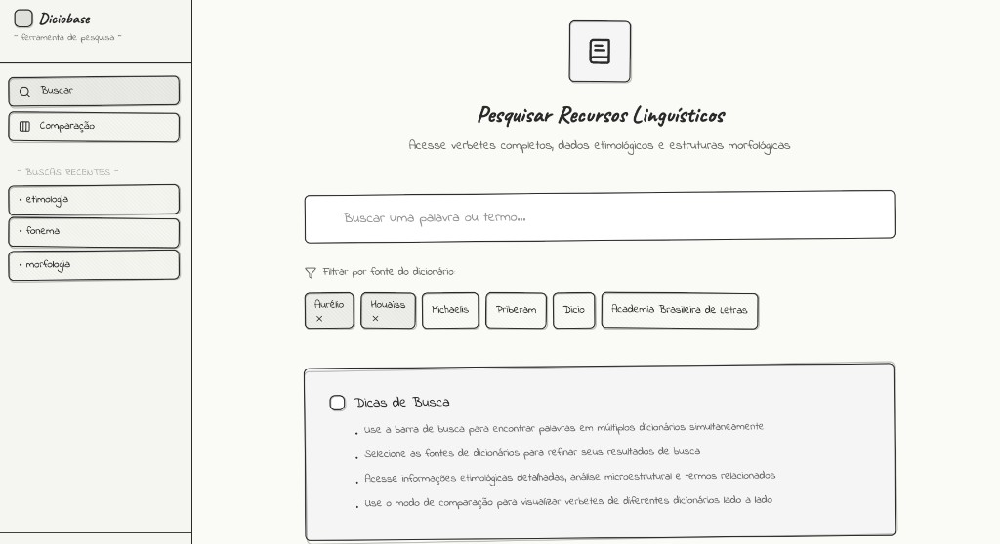
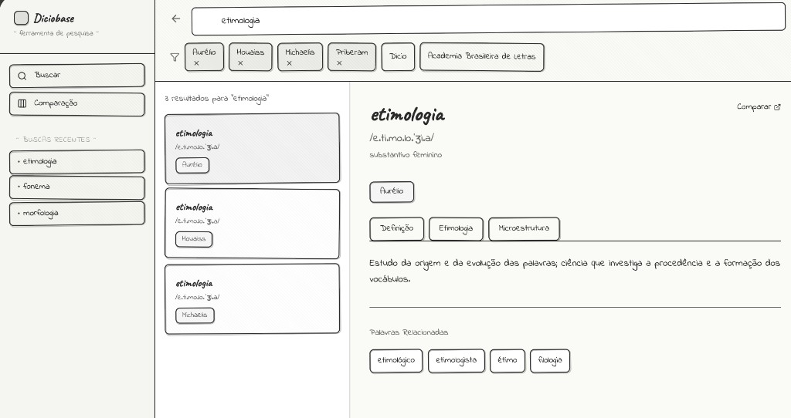
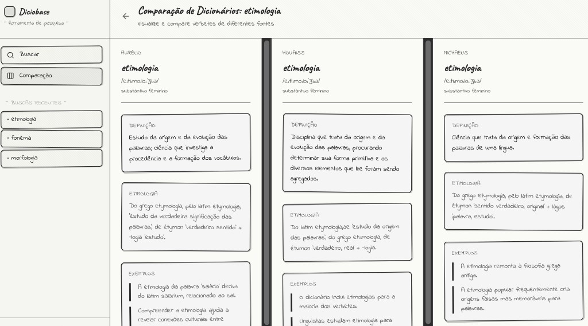

Diciobase connects five universities and linguistics institutes across Brazil and Portugal into one searchable Portuguese dictionary platform. I joined as a software engineering intern in 2025, initially tasked with database architecture, but the technical problem was inseparable from a user research problem nobody had asked me to solve yet.
"We have all this data. Researchers just cannot get to it without emailing three people and waiting a week."Babacar / Project Lead
I spent three weeks on discovery before writing a single line of implementation code.
Each institution built its dictionary database independently, different column names, different taxonomies, different encoding. To compare definitions across sources, a researcher had to log into five portals, export five CSVs, and manually reconcile them in a spreadsheet. Every single time.
"Before I can actually do research I spend two hours getting data into a readable format. That is not research. That is data wrangling."PhD Researcher / UFBA
"I have a script that does some merging. It breaks every time an institution updates their export format."Lexicographer / USP
I conducted eight semi-structured interviews across UFBA, USP, and UC Lisbon, plus two contextual inquiry sessions watching researchers work on screen share. Seeing them work was more revealing than any question I asked, including one researcher’s home-built Python script she ran every day and had never mentioned to anyone.
Voices from the field
140+ raw observations → 4 themes → 3 design principles
End-to-end workflow mapping, before any research began
How do we reduce time from question to first result while preserving the institutional identity that makes each source academically credible?
Hide schema complexity. Surface only result, source, and match reason. The complexity lives in the system, not in the researcher's head.
Every result carries its dictionary at all times. Provenance is not metadata, it is content.
Related words and derivations surface passively. Following a thread should be as easy as starting one.
One search replaces five separate logins. Provenance is visible at every step, researchers never lose track of where a result came from.
I built wireframes in Figma starting at the lowest fidelity I was comfortable sharing, then brought each version back to original research participants before moving forward. Each round pushed the design somewhere unexpected.

Screen 1, Search & Filters

Screen 2, Results & Detail

Screen 3, Comparison Mode
Researchers described search feeling "slow and uncertain." They re-submitted searches because they couldn't distinguish a slow system from no results.
Switched to parallel query execution across all five sources. PostgreSQL full-text search with composite B-tree indexing cut latency from 680ms to 410ms. Streaming added so results appear as they arrive.
A researcher described amending a published paper because a database restructured its URLs mid-project, breaking her academic citation.
Designed permanent, content-addressed URLs hashed from source ID and entry ID. Immutable regardless of upstream restructuring. Citation-safe from day one.
"If Houaiss says something and Aurelio says something different, I need to see both. Not an average." Researchers were skeptical of anything that normalized data across sources.
Built an abstraction layer that translates queries without transforming data. Raw field structures preserved per source. The query layer maps common concepts without modifying source content.
After the V3 usability session, the UFBA PhD researcher from my very first interview sent an unprompted follow-up message.
"I looked up a word for a paper. It took me four minutes including reading the results. That used to take my whole morning."PhD Researcher / UFBA, original research participant
The research phase did not slow this project down. It changed what the project was. Every hour spent interviewing saved hours of building the wrong thing. The ten-dropdown V1 wasn't a bad design, it was a design made without user knowledge.
Returning fall 2025 to build a semantic timeline feature and run a second research phase focused entirely on the lexicographer use case.